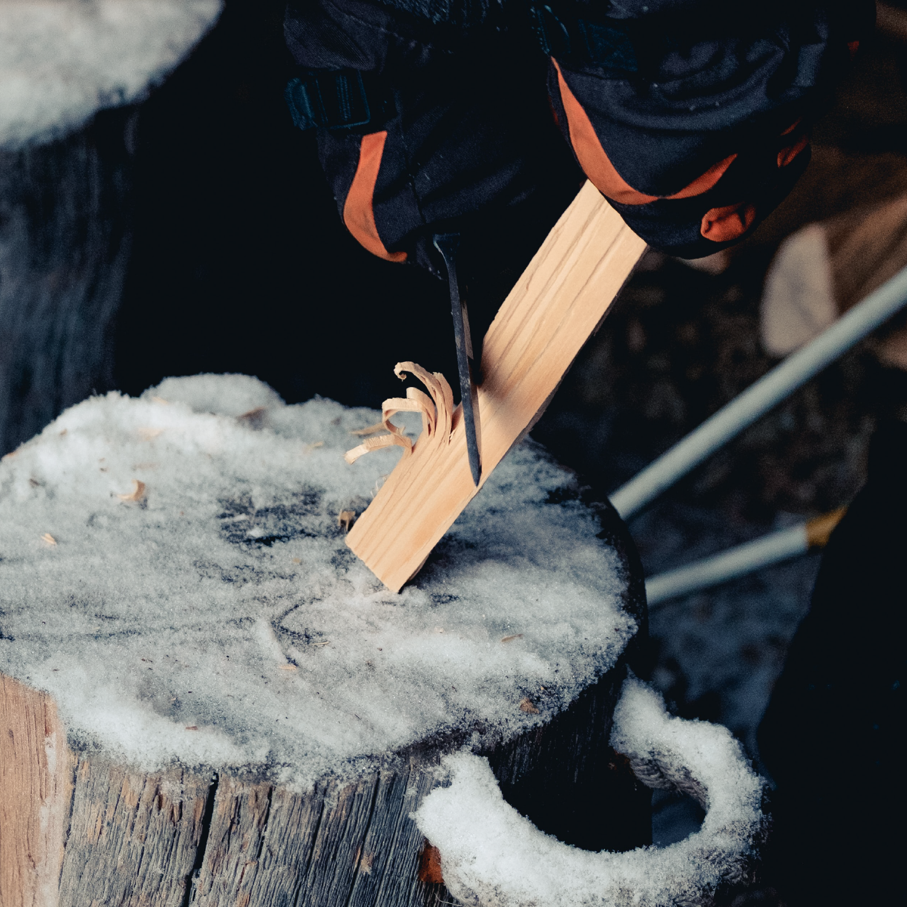

<div id="featuresWrap">
  <div id="features" class="features row container mx-auto pt-5">

    <div class="row">
      <div class="col-lg-4">
  
        
        <h2>The Beginning</h2>
        <p>It is very important to us where the material comes from and how the trees are grown. When we first set out on this journey, we visited many tree farms all around the world, to find the best partners we could possibly work with.</p>
        </div>
      <div class="col-lg-4">

        
        <h2>The Process</h2>
        <p>The process of harvesting and working the trees to turn them into a product is a very delicate one. Only a handfull of craftsmen have fully mastered the techniques required to create a Logge Log&reg;</p>
          </p>
      </div>
      <div class="col-lg-4">
 
        
        <h2>The Product</h2>
        <p>What we have designed has revolutionized the industry. Our products provides something that has never been offered before. The Logge Plus&reg; enables interactions that wasn't available in the past.</p>
  
      </div>
    </div>

  </div>
</div>